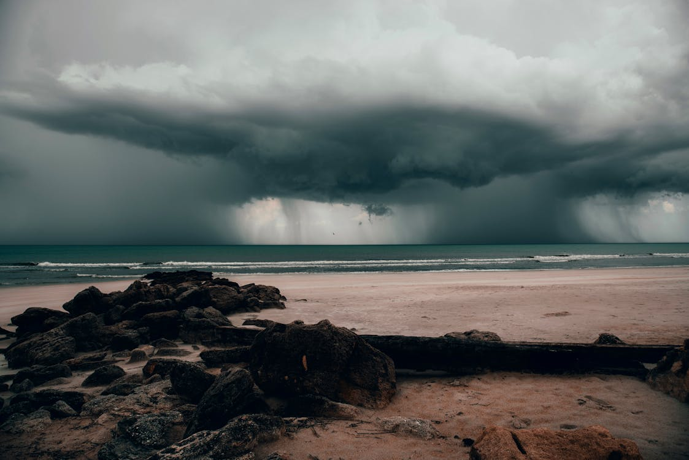

Choose Your Own Adventure: Oceanfront Exploration
You are standing on a cold, rocky beach. The frothy waves are crashing against the shore as you stare out over the horizon. There's a swath of dark clouds looming closer, and you are too far from your cozy home to return before dark. Lightning illuminates the sky. You should take cover. As you glance around for a solution, you see a few possible options. What will you do? Go to the LIGHTHOUSE, the HUT, or TAKE A SWIM?